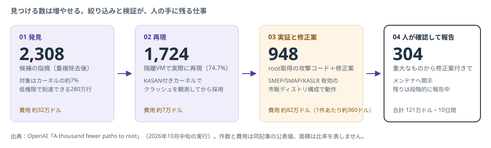

01 発見 → 02 再現
2,308件を1,724件に絞る
候補を隔離VMで実際に再現したものだけ採用。再現率74.7%。
01 / 08 · GPT-6 CYBER
OpenAIは11月5日、サイバーセキュリティ特化モデルGPT-6 Cyberを発表しました。同社の自動パイプラインは10月中旬の1回の実行で、Linuxカーネルの権限昇格948件について動く攻撃コードと修正案を作っています。
この号は、その数字を「脅威の大きさ」ではなく「直す側の作業がどう変わるか」として読みます。
ONE-PAGE BRIEF · 候補2,308件から、動く攻撃コード948件と修正案まで

01 発見 → 02 再現
候補を隔離VMで実際に再現したものだけ採用。再現率74.7%。
03 実証と修正案
保護機能を有効にした市販構成で動く攻撃コードと、修正案を生成。
04 人が確認
研究者が攻撃コード・修正案・深刻度を確認してメンテナへ開示。
出典：OpenAI / A thousand fewer paths to rootOpenAI / GPT-6 Cyber 発表
公式資料から：見つかる速さと、直せる速さ
サーバー・端末の運用担当
OpenAIは、最新パッチが当たっていないOSの低権限アカウントは、十分な資金を持つ攻撃者にとってroot権限と同等とみなすべきだと書いています。
「いつか当てる」の猶予が短くなる。
OSSのメンテナ
カーネルの候補は12時間で2,308件。OpenAI自身も、全件を人手で調べるのは現実的でないとして、再現と絞り込みを自動化しました。
報告の質と優先順位が、メンテナの時間を決める。
セキュリティチーム
発見より、どれが本物で、どの境界を越え、どれから直すかの判断が詰まる。OpenAIはこれを「発見ではなく、優先順位付けと検証の詰まり」と表現しています。
道具が変わっても、最後の判断は人に残る。
この号の読み方：948件は「Linuxが危ない」の話ではなく、発見が流れ作業になった時に、直す側の仕事がどう組み替わるかの話です。
公式発表：数字で見る今回の実行
実行を含む10日間で、61件は上流で修正済み、43件は修正案が準備中、299件が公開の場で議論中でした。OpenAIは、コミュニティの指示に従い重大な304件を修正案付きで開示したとしています。
Mozillaは報告を受けて修正の取り込みを始め、多くはすでに配布済みです。Firefoxの担当者は「複数世代のフロンティアモデルで強化した後でも、未知の高深刻度の脆弱性が見つかった」とコメントしています。
7月と10月の実行は、同じ研究用の仕組みで最新のカーネルを対象にしたとOpenAIは説明しています。3か月の間にカーネル側の強化も進んでいるため、差の全部がモデルの差とは限りません。
出典：OpenAI / Stage costs・Maintainers are moving quickly OpenAI / Real-world impact
公式資料：5段階の自動化と、人が持つ最後の判断
01 · 発見
偵察役のエージェントが、低権限ユーザーから到達できる部分を選び、分析役が候補を出す。対象はカーネル全体の約7%。
02 · 再現
候補ごとに再現コードを作り、KASAN付きカーネルのVMで実行。出力とコンソールを見て、再現するまで直す。
03 · 実証
SMEP・SMAP・KASLR・HARDENED_USERCOPYが有効な市販ディストリ構成で、root取得まで通す。
04 · 修正案と確認
修正案を生成し、根本原因・最小再現・攻撃コードを束ねる。研究者が確認してからメンテナへ報告。
1件あたりは本資料の計算（費用÷件数）。実証の「成功 約360ドル」はOpenAIの公表値で、失敗した69件は1件あたり約3,922ドルと桁が違います。OpenAIは費用を上限値と位置づけ、工夫次第で下がると述べています。
責任の線引き：自動化されるのは発見・再現・実証・修正案の生成まで。深刻度の判断と報告は人が行い、修正の取り込みはメンテナが判断します。AIが書いた修正案が「そのまま採用される」わけではありません。
出典：OpenAI / Pipeline（Discovery・Validation・Exploitation・Patch）
公式発表：誰が使えるか、どこまで守られるか
Daybreak Redの承認ユーザー限定。APIとCodexで提供し、順次Daybreak Red全体へ広げる予定。一般のChatGPTでの提供予定は発表されていない。
本人確認が必要。組織には多要素認証やSSOなどの対策を求める。重要インフラの防御組織向けに専用の枠も設ける。
Daybreak Blueは検証済みの防御者向けで、脆弱性と修正の検証に不要な拒否を減らす。Daybreak Redは攻撃コード開発や承認済みのテストを扱う。
ExploitGym 48.5%（前世代GPT-5.6 Cyberは32.1%）。OpenAIの準備フレームワークでサイバー能力は最上位のCritical（前世代はHigh）。
無関係なサービスを攻撃しないかの評価で、配備用プロンプトなしで99.93%、ありで100%。前世代は94.49%。
タスク中止の警告に従った割合は73.0%で、GPT-6 Astraの78.38%を下回る。完了できなかった理由を説明しきれない例も報告されている。
本資料の整理：「範囲を守る99.93%」は隔離された評価環境での結果です。実運用では、利用者側が対象範囲と権限を明示し、監査の記録を残す運用が前提になります。OpenAIも「利用者の意図と権限の範囲内か」を監視すると説明しています。
出典：OpenAI / Stronger alignment・Detecting misuse ITmedia NEWS / 提供条件と安全性の課題
数字を読むときの留保
動いた攻撃コードは1,169本。重複する原因をまとめ、修正案の数948を固有の脆弱性数としています。候補のうち3.1%はモデルの分析が誤りで、残りの未再現は競合条件など再現が難しいものでした。
10月中旬の最新カーネルを、市販デスクトップ構成のVMで試しています。手元の環境で同じ948件が有効かは別問題で、カーネル版・構成・既に当たった修正で変わります。
121万ドルはOpenAIの研究条件での上限値です。GIGAZINEの約1億9,200万円は記事時点の換算で、為替で動きます。報奨金との比較（最大6,630万ドル相当）も仮定の計算です。
新しい攻撃手法10種類の詳細は安全上の理由で非公開。GPT-6 Cyberの料金も発表されていません。Firefoxの81件は、どのCVEが該当するかOpenAI側は個別に示していません。
自己申告と独立検証を分ける：件数・費用・ベンチマークはOpenAIの公表値です。Mozillaの修正公開とLinux上流の修正状況は、第三者側の動きとして確認できる部分です。
出典：OpenAI / Exploitation・Novel exploitation techniques GIGAZINE / 円換算と報奨金の比較
本資料の提案：モデルを使えなくても、今週できること
GPT-6 Cyberは承認ユーザー以外は使えません。それでも今回の発表が言っているのは、更新の遅れと、低権限アカウントの隔離という、自分で決められる2点です。
カーネルとブラウザについて、修正公開から本番適用までの日数を直近3回分で出す。長い環境から順に、理由（検証・再起動の窓・担当）を書き出す。
記録：公開日、適用日、未適用の台数、遅れの理由
共有サーバー、CI実行機、コンテナホストで「低権限ユーザーが動かせる場所」を一覧化し、そこからrootを取られた場合に届く範囲を書く。
記録：到達できる資産、分離の有無（gVisor・Firecracker等）
AIが作った報告を受ける立場なら、最新コードでの再現、重複の確認、最小再現コードの有無を受付条件にする。OpenAI自身が再検証の必要性を書いている。
記録：受付条件、再現できた割合、対応に要した時間
防御側として検証に使いたい組織は、本人確認・MFA・SSOなどの要件と、対象範囲の指定方法を先に確認する。申請の可否自体が組織の体制の点検になる。
記録：満たしていない要件、対象範囲の定義、監査ログの保存先
判断の目安：1と2が数字で出せない環境は、モデルの有無に関係なく優先度が高い。出せる環境は、更新の自動化と隔離の強化を先に進める。
このページは本資料の提案です。GPT-6 Cyberの利用・性能測定は行っていません。数値の目標は各環境の要件で決めてください。
要点と一次出典
見つける力は、もう希少ではない。
当てる速さと隔離が、差になる。
変わったこと：発見・再現・実証・修正案までが自動化され、同じ仕組みで3か月前の5倍以上が見つかった。人が持つのは深刻度の判断と報告、取り込みの判断。
残る仕事：モデルは承認された防御者だけ。それ以外の組織は、更新の所要日数と低権限アカウントの隔離を測り、短くする。
確認範囲：件数・費用・ベンチマークはOpenAIの公表値で、本資料は独立に検証していません。Firefoxの修正はMozillaの公開情報で配布済みを確認しましたが、該当CVEの対応表はありません。
情報確認：2026年11月7日（JST）。公式発表と本資料の提案を区別しています。提供条件は変わるため、申請前に最新の一次資料を確認してください。